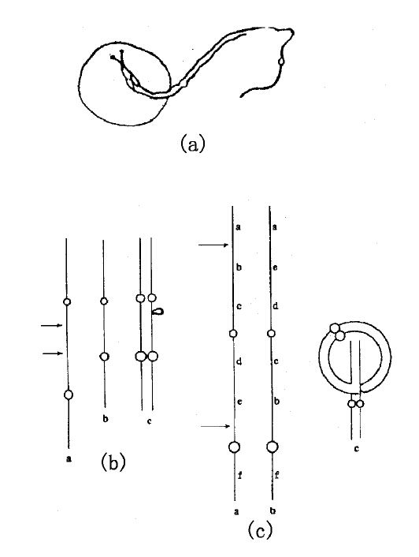
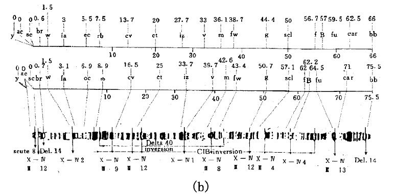

什么是基因？
孟德尔提出的作为纯粹理论单位的遗传因子，其本质究竟是什么？基因是什么？现在我们把基因定位于染色体上，是不是我们就认为基因是物质单位，是比分子更高层次的化学实体？坦白地说，现在的遗传学家并不太关心这些问题，他们反对现在和以后讨论关于假想的遗传因子的性质问题。什么是基因？它是真实的存在还是纯属虚构？遗传学家对这些问题的看法并不一致。在现在的遗传学实验水平上，基因究竟是假设的单位还是物质实体，这个问题并没有很大意义。不管哪一种情况，基因都是和特定的染色体联系在一起的，都可以依靠纯粹遗传学分析给它们定位。因此，如果基因是物质单位，那么它就是染色体的片段；如果基因是虚构的单位，那么它就被认为是染色体上的特定位置——与依据另一种假说确定的位置相同。所以，不管遗传学家持哪一种观点，对他的实际工作都没有多大影响。
从遗传学家理论假定的基因到他们所研究的性状，就是整个的胚胎发育过程。经过这个发育过程，基因中内含的特性转变为细胞原生质的外在的特性。由此我们好像是触及了一个生理学问题，一个对传统生理学家来说完全陌生的新问题。
一方面根据遗传学研究的成果，另一方面根据细胞学的显微研究，我们归结出了基因共同具有的一些性质。对这些性质还可以进一步讨论。
因为染色体分裂时基因线被纵向劈开（每条子染色体精确地带有母染色体的一半基因），所以我们理所当然地要得出这样一个推论：基因被分成了精确相等的两部分。但是，我们还不知道这个过程是如何进行的。由细胞分裂类推，使人想到基因分裂可能也是以同一方式进行的。但是我们不应当忘记，细胞分裂中经历的比较容易观察到的过程，可能很不适用于基因精确等分为两部分的过程。因为我们还不知道任何有机物分子具有相似的分裂现象，所以我们在谈论基因的分子结构时也必须非常慎重。另一方面，有机物中复杂的分子链结构，可以为我们将来某一天画出基因的分子及其聚合结构提供启示，并为发现基因分裂的方式提供线索。
基因经过无限多次分裂之后，它们的大小并没有缩减，或者说就性能来看并没有变化，因此，从某种意义上说，基因在连续两次分裂之间必定通过生长而得到了补充。我们可以称这种性质为“自催化作用”，可是，因为我们不知道基因是怎样生长的，所以如果我们断言基因在分裂之后的生长过程与化学家所说的自催化是同一过程，那就太冒险了。现在进行这种比较是很靠不住的。
基因的相对稳定性是由遗传学证据得出的结论。经过上千次的，甚至数百万次的分裂，它的性质依然保持不变。不过，它偶尔也可能发生变化。我们称这种变化为“突变”，这是德弗里斯创造的术语。需要强调说明的是，从绝大多数情况来看，突变了的基因依然保持了生长和分裂的特性，而且更为重要的是依然具有稳定性。当然我们不必断言：无论是原始的基因，还是突变了的基因，它们的稳定性都是相同的。事实上已有大量证据表明，某些基因比其他基因较易发生突变，而且在一些研究工作中这是司空见惯的现象，无论是在生殖细胞中还是在体组织细胞中。一个很重要的事实是：这些反复发生的变化具有明确的特定范围。
根据遗传学的证据和细胞学观察的结果可以断定，基因以线性顺序存在于染色体上，其相对位置保持不变。我们无法精确地陈述这种相对位置究竟是由于历史的偶然事件造成，还是由于每个基因与相邻基因之间的某种关系。但是，对染色体断片离位及它与另一断片的重新连接的研究表明，是偶然事件而不是彼此间的反应决定了基因的位置。因为当染色体的一个断片与另一染色体的一个基因链的末端相连时，或者一个染色体的某个断片发生连接顺序颠倒时，处于新位置的基因会像它们在正常染色体中一样快地连接起来。
有一点特别重要。根据迄今为止对基因突变效应的研究结果，我们可以断定：它们所引起的作用的类型，与它们在染色体上的位置一般说来没有关系。一个基因可能主要影响眼睛的颜色，它附近的另一个基因可能主要影响翅的结构，而位于同一区域的第三个基因则可能决定雌性或雄性的生育能力。而且，位于不同染色体上的基因，有可能对同一器官产生几乎同样的影响。因此人们可以说，基因在遗传物质上的位置与它们所产生的作用没有关系。这就导致了一个推论，它对发育生理学有比较直接的意义。
在遗传学的早期阶段，人们习惯于谈单位遗传性状，因为孟德尔的比率是从一些区分比较清楚的相对性状得出来的。一些遗传学新手由此推断，决定所选择的那些性状的孟德尔式遗传单位就是基因，基因的作用是单一的。这个推理是不慎重的。为了摆脱这一错误观点，需对它进行强有力的批判。已有的实验事实表明，每个基因产生的作用不是单一的，有时能对个体的性状发生多方面的影响。确实，在大多数遗传学研究工作中，总是选择它对其中一个性状的影响进行研究，这个性状是最明确界定了的，最容易与其相对性状区别开来。不过，在大多数情况下，微小的差别还是可以发现，它们都是同一基因作用的结果。事实上，用于划分相对性状的重要区别，对个体的生存可能没有多大意义，相反，某些伴生的结果可能具有生命攸关的重要意义，因为它可能影响该个体的组织系统，影响它的生存能力，它的寿命，或者它的生育能力。我不必对这些联系讲得太多，因为现在所有遗传学家都已认识到了。然而重要的是应当重视这些联系，它与发育生理学的所有问题都相关。
染色体在成熟分裂时配对，接着又分别向着相反的两极运动，每个子细胞中染色体数目减半，这一过程保证每个子细胞只含有一套染色体，并保证了孟德尔第二定律的实现。这些运动看起来像是物理学事件，细胞学家称这两个现象为“吸引”和“排斥”，但是我们并不知道其中究竟发生了什么物理学过程。“吸引”和“排斥”这两个术语只不过是描述性的，目前它们的意思仅是说同类染色体聚集到了一起，然后又分离开。
以前不知道染色体的组成，以为染色体聚集在一起是随机配合，即任何两个染色体都可以配成一对。染色体的配对与雌雄原生动物或精卵细胞的配对显然可以比较，而且，因为任何二倍体细胞的每对染色体中都是一条来自父本，另一条来自母本，因此使人想到，在染色体配对时也有某种形式的雌性和雄性之分。但是现在我们有充分的证据说明这种思想是错误的，因为有些情况下配对的两条染色体都是来自母本，甚至是来自同一条染色体的姐妹单体。
近年来的遗传学分析不仅证明配对的染色体是同类型的染色体，即带有同一基因链，而且证明配对的过程是一个非常精密的过程，基因点对点地结合在一起，除非因某种物理障碍受阻。最近几年已经有一些非常漂亮的实验研究证明，当染色体结合在一起时，并非是整个染色体，而是其上的基因一个靠着一个地配合起来。例如，一条染色体由于偶然原因失去了它的一个片段，而与另一条染色体连接起来，这样就建立起一个新连锁群。当它配对时，在其姐妹染色体中没有与这个片段相对应的片段。已经证明，这个片段将会和其母染色体，即它原先所在的那条染色体的相应部分配对，见下图。

上半部表示一条染色体（黑色的）的一个片段转移到了另一条染色体（白色的）上，下半部表示这些染色体的配对方式
当一条染色体失去一个末端时，它与它的配对染色体只能部分配合，即仅仅存在着同类基因的部分可以相配合，如下图（a）。如果一条染色体在某处丢失了一小部分，因而比原先短了一些，那么在配对时，在相对于短染色体丢失了的那个部分，长染色体会形成一个环，如下图（b）所示。这样一来，那条染色体其余部分的基因才能与相应的基因互相配合在一起。更明显的例子是，如果一条染色体中间某一段倒转了（旋转180°），那么当它与其正常的同源染色体配合时，那个倒转了的区域自己会颠倒过来，使得相同的区域配合起来，也就是说使得同类的基因配合在一起，如下图（c）所示。月见草属植物染色体的配对，提供了这种结合方式的很好的例证。同类的基因可以互相找到并相配合，甚至当染色体的一半已经发生了交换以后仍可以互相找到。
赫兹、佩恩特和布里奇斯最近对果蝇唾液腺染色体的研究工作，取得了令人惊讶的成果。
果蝇老幼虫唾液腺细胞的核非常大，它所含有的染色体可以大到正常染色体的70至150倍。赫兹已经证明，神经节细胞的染色体，尤其是X和Y染色体，它们的某些区域染色很深，而另一些区域染色较浅，这些区域分别对应着染色体基因图上不含或含有基因的区域。

（a）印第安小麦的两条配对的染色体，其中一条染色体末端缺失（仿Mc Clintock）。（b）印第安小麦的两条染色体，其中一条在其近中点处缺失一段。当这两条染色体配对时，较长染色体在对应于较短染色体缺失部位的区域形成一个环。（c）印第安小麦的两条染色体，其中一条含有一段长长的倒位区域。当这两条配对时，它们是以该图右边所示的方式结合，同类的基因结合在一起（仿Mc Clintock）
佩恩特作出了更加重要的发现，他可以把唾液腺染色体的横纹系列与遗传学上已知的连锁图的基因系列互相对应起来，见下图（a）、（b），而且，X和Y染色体的空区不具有带状横纹结构。他还进一步发现，如果连锁图上的一部分基因顺序倒转了，那么染色体上的横纹顺序也会倒转；如果染色体的片段转移到了别处，可以根据它的特殊横纹系列辨认出来；如果连在一起的基因片段丢失了，那么在染色体上会有相应的横纹缺失。布里奇斯通过对个别染色体的深入研究，把这种分析又进一步向前推进，他已经证明了横纹和基因位置之间精确的一致性。他使用改进了的方法，鉴别出了比原方法多一倍的横纹，因而对横纹与基因位置的关系作出了更完整的分析。因此，不管横纹是不是真正的基因，但横纹位置与相应的基因位置之间的明显一致性已经得到证明了。对横纹结构的分析与遗传学上的论据取得了一致，表明当基因顺序发生某种转换时，横纹的顺序也会发出相应的改变，这可以适用于最精细的横纹结构。


（a）雌性果蝇幼虫唾液腺的染色体（仿Painter）。两条X染色体
已经合为一体。这个染色体已经以它的“附着端”附着于普通的核外染色质上。第二和第三染色体的附着点在其接近中点处，而且已经在附着点与普通核外染色质接合起来，每一条染色体留下了两个自由末端。每一个自由末端的同类分支已经结合起来，总共有四个自由末端。（b）下面
是果蝇唾液腺X染色体的横纹结构，上面是基因图（仿Painter）。斜的虚线把基因图的位点与唾液腺染色体上相应的位点联系起来。
唾液腺细胞核的染色体数目只有完整数目的一半（按赫兹的报道），佩恩特解释说这是由于同源染色体结合在一起了，见下图（a）。组合在一起的两个染色体显示出了同样顺序的横纹，当它们结合得不紧时表现得特别明显。布里奇斯和科尔佐夫都提出：同源染色体并非只是结合为一个整体，它们每一个都分裂两次或三次，有时可以产生出多达16甚至32条链［见下图（a）、（b）］。因此可以认为，那些横纹每一个都含有16或32个基因。也许这还不足以证明横纹就是相应的基因，那么可以认为横纹是染色体的某种组成单位的复合物。
基因相连的顺序偶尔会发生改变，对这个问题，遗传学的结论与从横纹染色体得到的证据是一致的，有几个例子可以说明。下图（a）描述了从唾液腺制备的第三染色体的右半部。它的两个组分，有一部分合为一体，一部分仍是分离的。在图的下部，显示了其中一个组分的一个倒转片段（末端倒转）。相像的横纹才能结合，通过那个组分末端的自身颠倒，使得这种结合可以实现，下图（a）上方的小示意图说明了这一点。下图（b）中显示了第二染色体的一个很短的区域。其中一个组分缺失了一些基因，另一正常组分在对应缺失的部分形成了一个凸起，使缺失部位上下的相应横纹可以会合。

（a）从唾液腺制备的第三染色体的右半部。它的两个组分有一部分已经合为一体（右上）。其中一个组分末端部分有一倒转区段，这一部分通过
自身颠倒过来而与相应的正常染色体结合，如上图右边的小示意图所示。（b）唾液腺制品，显示第二染色体的一部分；它的一个组分是有缺失的，对应于其缺失部位，另一组分向外弯曲凸起，使得这个部位上下两边的相应的横纹可以会合（仿Bridges）